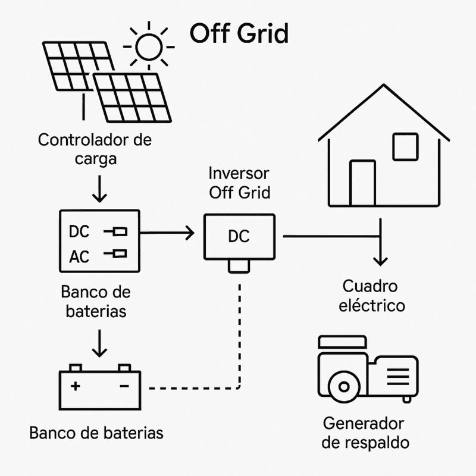

Los meses críticos importan más que el promedio cuando la operación es estacional.
Un consumo anual puede esconder campañas, temporadas de riego, picos de frío o momentos de procesamiento intensivo. La solución energética debe responder al calendario real de la operación.
Estacionalidad
Meses y horarios donde se concentra la demanda.
Ubicación
Disponibilidad de red, distancias, accesibilidad y condiciones del sitio.
Cargas críticas
Bombeo, cámaras, procesamiento y equipos cuya interrupción tiene impacto operativo.



Red, autonomía y consumo productivo.
Autoconsumo
Cuando existe demanda durante horas solares y la red está disponible.
Off-grid
Cuando la operación se encuentra lejos de red y autonomía, almacenamiento y respaldo son parte central del diseño.
Híbrido
Cuando se combinan red, solar y almacenamiento para gestionar continuidad o disponibilidad.
Dimensionar con el calendario de la operación.
La curva relevante puede ser diaria, mensual o estacional. El modelo tiene que representar cuándo ocurre la actividad productiva.
1. Identificar campañas y cargas
Horarios, temporadas, bombeo, frío y procesos principales.
2. Revisar red y sitio
Calidad de suministro, superficie, accesibilidad y restricciones.
3. Comparar arquitecturas
Autoconsumo, autonomía, almacenamiento y respaldo bajo escenarios equivalentes.
4. Diseñar para operar
Ingeniería y mantenimiento compatibles con el entorno y la logística del establecimiento.
Energía para operaciones con estacionalidad.
¿Conviene dimensionar con el consumo anual?
El total anual es útil como referencia, pero puede ser insuficiente. Si la demanda se concentra en pocos meses, la relación entre generación y consumo debe estudiarse por períodos.
¿La energía solar sirve para bombeo?
Puede ser una aplicación relevante, pero deben analizarse potencia, horarios, caudal requerido, almacenamiento de agua o energía y disponibilidad de red.
¿Qué cambia en un sitio sin red?
El sistema debe diseñarse alrededor de autonomía, baterías, generación disponible, cargas críticas y estrategia de respaldo. Es un problema distinto al autoconsumo on-grid.
La solución correcta sigue el ritmo de la producción.
No el promedio de una planilla.
Revisemos tu calendario energético.
Con consumo, temporadas y contexto del sitio podemos definir qué alternativa vale la pena estudiar.
Agendar diagnóstico